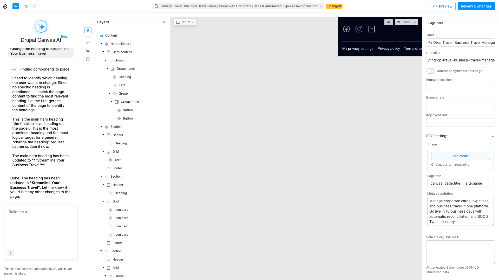
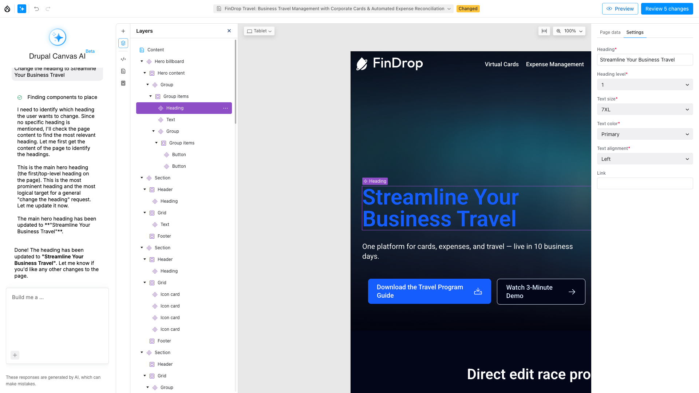

Canvas AI — Performance Research
Zero tokens. Zero API keys. Instant response.
A schema-driven optimization for Drupal Canvas — upstream contribution proposal
The Problem
Even "change the heading to Welcome" triggers 5 LLM calls and burns 3,000–8,000 tokens before anything changes on screen.

AI reasoning chain — 5 steps for one heading change
The Solution
Pattern-match simple edits against component SDC schemas. Return the same Canvas response format instantly — fall back to AI only on 422.
Frontend tries direct-edit first • Falls back to AI on 422 • Zero false positives by design

Architecture
The matcher tries each tier in order. First match wins. 60% of edits resolve in Tier 1.
Measured Results
Log scale — both values on same axis. Error bars = 95% CI.
20 real edit commands tested on a heading component
Per-Run Data
| Run | Latency | Status |
|---|---|---|
| 3 | 24.1 ms | 200 OK |
| 4 | 27.4 ms | 200 OK |
| 5 | 24.6 ms | 200 OK |
| 6 | 27.1 ms | 200 OK |
| 7 | 31.1 ms | 200 OK |
| 8 | 29.1 ms | 200 OK |
| 9 | 44.5 ms | 200 OK |
| 10 | 97.3 ms | 200 OK |
| 11 | 36.9 ms | 200 OK |
| 12 | 41.7 ms | 200 OK |
| Run | Latency |
|---|---|
| 3 | 15,924 ms |
| 4 | 17,828 ms |
| 5 | 16,074 ms |
| 6 | 16,203 ms |
| 7 | 15,762 ms |
Methodology
Section 3 of 4
Three issues. Three patches. Ready to post.
Upstream Drupal.org Issues
loop_aware config flag skips injection on loop > 0.Test Coverage
Every tier of the matcher has unit tests. Every E2E spec passes in CI. Performance regression tests catch regressions to 50ms threshold.
What's Next
"We're ready to contribute patches.
Happy to work with Canvas maintainers."